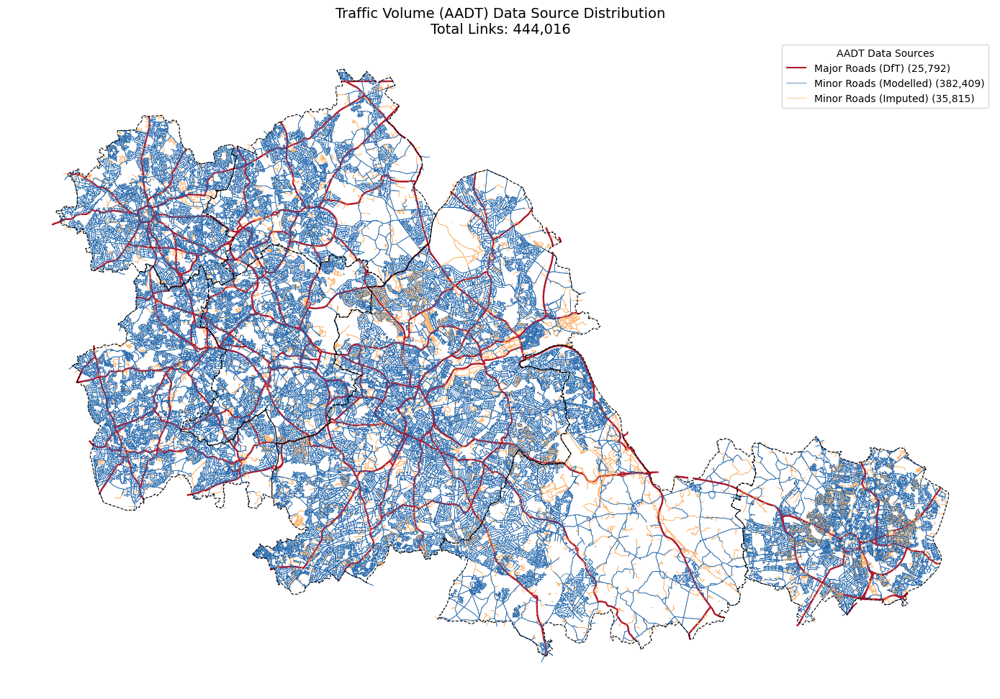

import warningswarnings.filterwarnings('ignore')import osfrom pathlib import Pathimport numpy as npimport pandas as pdimport geopandas as gpdimport matplotlib.pyplot as pltfrom shapely.ops import linemerge# Project pathsDATA_DIR = Path('../Data/Raw')CLEANED_DIR = Path('../Data/Cleaned')OUTPUT_DIR = Path('../Data/Cleaned')CRS_BNG ='EPSG:27700'pd.set_option('display.max_columns', None)print(f"Working directory: {os.getcwd()}")
Working directory: /Users/pippin/Library/CloudStorage/OneDrive2-UniversityCollegeLondon/Dissertation_CASA&TfWM/Code
1. Load Input Data
This notebook assigns traffic volume (AADT) to the cycleable network for the LTN 1/20 Figure 4.1 adequacy assessment, which requires both speed and traffic volume as inputs.
Input Datasets
File
Source
Description
cycleable_directed_network.parquet
00_data_processing output
Unified cycleable network with 8-category facility type classification
wm_minor_road_predicted_aadt.gpkg
Volume estimation output
Predicted AADT for minor roads (residential, tertiary, unclassified, secondary) via the Morley & Gulliver (2016) pgRouting/Poisson GLM approach
Official AADF count point data, used here for A Roads which are not covered by the minor road prediction model
AADT Assignment Strategy
AADT is projected to all links in the cycleable network. The two AADT sources serve complementary roles, determined by road classification:
Road Classification
AADT Source
Rationale
A Road
DfT AADF count points (linear referencing)
The prediction model uses nearest_major_aadt as an input feature, creating a circular dependency if applied to major roads. DfT AADF is the official UK source for major road traffic volumes.
B Road, Classified Unnumbered, Not Classified, Unclassified
Predicted AADT (Morley & Gulliver model)
DfT count points are sparsely distributed on minor roads. The routing-based prediction model provides continuous coverage.
Remaining gaps
Road classification median
Predominantly residential streets with Unknown classification where OSM coverage is incomplete. Filled using the median AADT of matched links within the same roadclassification group.
Off-carriageway links (shared use paths, fully kerbed cycle tracks) will naturally receive low or no matched AADT; the downstream LTS classification determines which links actually use the volume value.
The predicted AADT model (Morley & Gulliver, 2016) outputs AADT estimates on an OSM-derived road network covering four road classes: residential, tertiary, unclassified, and secondary. These are joined to the OS NGD cycleable network via spatial nearest-neighbour matching (centroid-to-nearest-line, 30m threshold).
The 30m threshold accounts for minor geometric discrepancies between the OSM and OS NGD networks while avoiding cross-contamination from adjacent roads. Predicted AADT is assigned only to non-A Road links; A Roads are handled separately in Section 2.2.
Minor roads (non-A Road) AADT coverage:
Matched: 382,409
Unmatched: 71,986
2.2 A Roads — DfT AADF Count Points
A Roads are not covered by the minor road prediction model, which uses nearest_major_aadt as an input feature (Morley & Gulliver, 2016), creating a circular dependency if applied to major roads. Instead, AADT is obtained from the DfT Annual Average Daily Flow (AADF) count point data — the official UK source for major road traffic volumes.
DfT Link-Level Data Structure
The DfT major road network is divided into links, defined as continuous road sections between major junctions. Each link has a uniquely referenced Count Point (CP) where traffic is counted or estimated (DfT, Road Traffic Estimates Methodology Note). The DfT provides AADF estimates for every link on the motorway and A-road network, derived from manual traffic counts expanded to annual averages using Automatic Traffic Counter (ATC) data. Where a count has not been conducted in the current year, the AADF is estimated from the previous year’s value using regional growth factors.
It should be noted that DfT’s traffic estimates at the individual road link level are less robust than regional or national aggregates, as they are not always based on up-to-date counts at each location (DfT, Data Disclaimer).
Assignment Method
Since the OS NGD road network is segmented at a finer granularity than the DfT link network (multiple OS NGD links fall within a single DfT link), a linear referencing approach is used to assign DfT AADT to each OS NGD A Road link:
For each road number (e.g. A38), all OS NGD links are merged into a continuous centreline using shapely.ops.linemerge.
All DfT count points on the same road number (nationally, not clipped to the study area, to ensure boundary roads are covered) are projected onto this centreline, producing a 1D position for each count point.
Each OS NGD link’s centroid is similarly projected onto the centreline.
Each OS NGD link is assigned the AADT of the nearest count point along the road (by 1D distance), ensuring that the assignment follows the road’s geometry rather than Euclidean proximity, which could cross-contaminate between parallel roads.
This method respects the DfT’s own link-level data structure: OS NGD segments within the same DfT link (i.e. between the same pair of major junctions) receive the same AADT value.
For one road (A4545, 41 links) where no DfT count point exists, AADT was assigned from the nearest matched A Road link by spatial proximity.
Code
# =============================================================================# 2.2 A Roads — DfT AADT via linear referencing along each road# =============================================================================# --- Step 1: Prepare data ---a_mask = network['roadclassification'] =='A Road'a_links = network[a_mask].copy()a_links['road_num'] = a_links['roadclassificationnumber'].str.strip().str.upper()dft_aadf['road_num'] = dft_aadf['road_name'].str.strip().str.upper()# --- Step 2: For each road number, match via 1D linear referencing ---results = []for road_num in a_links['road_num'].dropna().unique(): links_r = a_links[a_links['road_num'] == road_num] cps_r = dft_aadf[dft_aadf['road_num'] == road_num]iflen(cps_r) ==0:continue# Merge OS links into continuous line(s) merged = linemerge(links_r.geometry.unary_union)# Project count points onto merged line → 1D positions cp_positions = []for _, cp in cps_r.iterrows(): dist_along = merged.project(cp.geometry) cp_positions.append({'dist_along': dist_along,'dft_aadt': cp['dft_aadt'], }) cp_df = pd.DataFrame(cp_positions).sort_values('dist_along')# For each OS NGD link, project centroid → find nearest CP in 1Dfor _, link in links_r.iterrows(): centroid = link.geometry.centroid link_pos = merged.project(centroid) cp_df['dist_1d'] = (cp_df['dist_along'] - link_pos).abs() nearest = cp_df.loc[cp_df['dist_1d'].idxmin()] results.append({'osid': link['osid'],'dft_aadt': nearest['dft_aadt'],'match_dist_1d': nearest['dist_1d'] })result_df = pd.DataFrame(results)result_df = result_df.drop_duplicates('osid', keep='first')# --- Step 3: Merge matched results back to network ---network = network.merge( result_df[['osid', 'dft_aadt']].rename(columns={'dft_aadt': 'a_road_aadt'}), on='osid', how='left')has_a = network['a_road_aadt'].notna()network.loc[has_a, 'aadt'] = network.loc[has_a, 'a_road_aadt']network.loc[has_a, 'aadt_source'] ='dft'network.drop(columns='a_road_aadt', inplace=True)# --- Step 4: Fill remaining A Roads (no DfT count point for that road number) ---still_missing = (network['roadclassification'] =='A Road') & (network['aadt'].isna())if still_missing.sum() >0: a_matched = network[ (network['roadclassification'] =='A Road') & (network['aadt'].notna()) ] missing_links = network[still_missing].copy() missing_links['_centroid'] = missing_links.geometry.centroid filled = gpd.sjoin_nearest( missing_links.set_geometry('_centroid')[['osid', '_centroid']], a_matched[['geometry', 'aadt']].rename(columns={'aadt': 'fill_aadt'}), how='left', distance_col='fill_dist' ).drop_duplicates('osid', keep='first') network = network.merge(filled[['osid', 'fill_aadt']], on='osid', how='left') has_fill = network['fill_aadt'].notna() network.loc[has_fill, 'aadt'] = network.loc[has_fill, 'fill_aadt'] network.loc[has_fill, 'aadt_source'] ='nearest_a_road' network.drop(columns='fill_aadt', inplace=True)# --- Summary ---a_final = network[network['roadclassification'] =='A Road']print("="*60)print("A ROAD AADT ASSIGNMENT")print("="*60)print(f"Total A Road links: {a_final.shape[0]:,}")print(f" Matched (linear ref): {result_df.shape[0]:,}")print(f" Filled (nearest): {still_missing.sum():,}")print(f" Coverage: {a_final['aadt'].notna().sum():,} / {a_final.shape[0]:,}")print(f"\n1D match distance (linear referencing):")print(result_df['match_dist_1d'].describe())print(f"\nMedian AADT: {a_final['aadt'].median():.0f}")
============================================================
A ROAD AADT ASSIGNMENT
============================================================
Total A Road links: 25,833
Matched (linear ref): 19,395
Filled (nearest): 41
Coverage: 25,833 / 25,833
1D match distance (linear referencing):
count 19395.000000
mean 875.496954
std 906.440550
min 0.102739
25% 257.042856
50% 583.756960
75% 1176.360493
max 7349.386954
Name: match_dist_1d, dtype: float64
Median AADT: 17927
2.3 Remaining Gaps — Road Classification Median
For links still missing AADT after Steps 2.1 and 2.2, default values are assigned using the median AADT of matched links within the same roadclassification group.
These are predominantly residential streets with Unknown or Not Classified road classification where the OSM-derived prediction network has incomplete coverage. Given their route hierarchy (mostly Restricted Local Access Road and Restricted Secondary Access Road), these are low-traffic roads where the exact AADT value has minimal impact on the LTS classification — at 30 mph, even 500 AADT already triggers a Cycle Lane recommendation under Figure 4.1.
Median is preferred over mean because AADT distributions are right-skewed (a small number of high-traffic links inflate the mean).
Code
# =============================================================================# 2.3 Remaining Gaps — Road Classification Median# =============================================================================# Compute median AADT by road classification from matched datamatched = network[network['aadt'].notna()]class_median = matched.groupby('roadclassification')['aadt'].agg(['median', 'mean', 'count'])print("AADT by road classification (from matched data):")print(class_median.sort_values('median', ascending=False))# Fill gapsmissing_mask = network['aadt'].isna()print(f"\nFilling {missing_mask.sum():,} links by road classification median")network.loc[missing_mask, 'aadt'] = ( network.loc[missing_mask, 'roadclassification'].map( class_median['median'].to_dict() ))network.loc[ missing_mask & network['aadt'].notna(), 'aadt_source'] ='class_median'# Final coverage checkstill_missing = network['aadt'].isna()print(f"Still missing after all steps: {still_missing.sum():,}")# Final summaryprint(f"\nAADT source distribution:")print(network['aadt_source'].value_counts(dropna=False))
AADT by road classification (from matched data):
median mean count
roadclassification
A Road 17927.000000 20639.572640 25833
B Road 10074.975013 9867.710983 16800
Classified Unnumbered 5819.939876 5434.486856 17526
Unknown 1427.245845 2299.003480 36360
Unclassified 1397.795595 1980.591896 239107
Not Classified 1349.257225 1575.033862 18782
Filling 71,986 links by road classification median
Still missing after all steps: 36,212
AADT source distribution:
aadt_source
predicted 382409
NaN 36212
class_median 35774
dft 25792
nearest_a_road 41
Name: count, dtype: int64
3. AADT Assignment Validation
3.1 AADT Source Map
Spatial distribution of AADT data sources across the cycleable network.
Code
# =============================================================================# 3.1 AADT Source Map# =============================================================================fig, ax = plt.subplots(figsize=(14, 11))# Re-classifying: Merge 'nearest_a_road' into a broader 'Imputed' categoryb = network[network['aadt'].notna()].copy()b['aadt_source_grouped'] = b['aadt_source'].replace({'class_median': 'Imputed','nearest_a_road': 'Imputed'})# Define the new labeling and color schemesource_map = {'dft': {'label': 'Major Roads (DfT)', 'color': '#b2182b'},'predicted': {'label': 'Minor Roads (Modelled)', 'color': '#2166ac'},'Imputed': {'label': 'Minor Roads (Imputed)', 'color': '#fdae61'}}# Plot each groupfor source, info in source_map.items(): subset = b[b['aadt_source_grouped'] == source]iflen(subset) >0: lw =1.5if source =='dft'else0.5 subset.plot(ax=ax, color=info['color'], linewidth=lw, label=f'{info["label"]} ({subset.shape[0]:,})')# Handle missing datab_na = b[b['aadt'].isna()]iflen(b_na) >0: b_na.plot(ax=ax, color='black', linewidth=1.0, label=f'Missing ({b_na.shape[0]:,})')# Add contextstudy_area.boundary.plot(ax=ax, edgecolor='black', linewidth=0.8, linestyle='--')# Finalize legend and appearanceax.legend(loc='upper right', fontsize=10, title='AADT Data Sources', frameon=True)ax.set_title(f'Traffic Volume (AADT) Data Source Distribution\nTotal Links: {b.shape[0]:,}', fontsize=14)ax.set_axis_off()plt.tight_layout()plt.show()

3.2 A Road AADT Validation
Comparison of assigned AADT values (lines) against DfT count point measurements (dots) using a shared colour scale. Consistent colouring between lines and nearby dots indicates correct assignment.